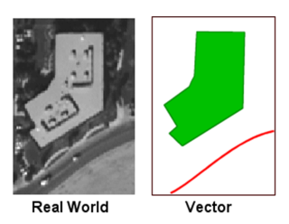

class: center <br> # Spatial Analysis of Urban Data ## Lecture and Tutorial: Spatial Statistics and Analysis of Vector Data [Bayi Li](mailto:barryli081@gmail.com) <br> <button onclick="window.location.href='index.html'">Go Back to Menu</button> .toc-wrapper[ <div class="toc"> <a href="#week6-focus" class="toc-item">Week 6 Focus</a> <a href="#vector-core" class="toc-item">Vector Operations</a> <a href="#distance" class="toc-item">Distance and Proximity</a> <a href="#pattern" class="toc-item">Spatial Statistics</a> <a href="#workflow" class="toc-item">Tutorial Workflow</a> </div> ] --- name: week6-focus ## Week 6 Focus This week introduces the main analytical operations used with vector data and explains how simple spatial statistics can help interpret point and polygon patterns. - use vector operations to answer proximity, containment, and overlap questions - distinguish buffering, overlay, and spatial join - understand planar and geodesic distance in GIS workflows - interpret basic spatial-statistical methods for point and area patterns --- ## Intended Learning Outcomes By the end of this session, students should be able to: 1. explain how vector analysis differs from visual map inspection 2. choose appropriate tools for proximity, overlay, and distance questions 3. describe common vector workflows in QGIS 4. interpret basic pattern-analysis results such as nearest neighbour, spatial autocorrelation, and hot spot analysis 5. connect vector-analysis outputs to urban research questions --- ## Lecture Structure 1. What vector analysis is used for 2. Buffering and overlay as core GIS operations 3. Distance measurement and proximity questions 4. Spatial statistics for describing patterns 5. Tutorial workflow and reading material --- name: vector-core ## Why Vector Analysis Matters Vector analysis is useful when we want to study discrete features such as buildings, roads, bus stops, parcels, planning zones, and reported events. Typical urban questions include: - what is near what? - what falls inside which boundary? - which features overlap? - how far apart are important locations? - are observed patterns random or clustered? --- .right_half[ <figure> <p></p> <figcaption>Vector data represents urban features as points, lines, and polygons.</figcaption> </figure> ] ## Reminder: The Vector Data Model Vector data usually represents: - **Points**: bus stops, trees, crimes, MRT stations - **Lines**: roads, rivers, cycling routes - **Polygons**: parcels, planning areas, buildings, land-use zones The geometry type matters because it determines which analysis tools are appropriate. --- .right_half[ <figure> <img src="imgs/vector/buffer.png" width="55%"> <figcaption>Proximity questions are often solved through buffering.</figcaption> <figsubcaption>Source: Egenhofer et al. (1992) and https://pythongis.org/part2/chapter-06/nb/05-spatial-queries.html</figsubcaption> </figure> ] ## Buffering Buffers are among the most common vector-analysis tools used to answer questions of proximity. A buffer creates a zone around a point, line, or polygon at a chosen distance. Example question: <xL>Which grocery shops are within 200 m of my home?</xL> --- ## Buffer Design Choices When creating buffers, you need to decide: 1. the buffer distance 2. whether the distance is constant or varies by feature 3. whether overlapping buffers should be dissolved 4. whether the result should include one ring or multiple rings These decisions change both the geometry and the interpretation. --- .right_half[ <figure> <img src="imgs/vector/buffer1.png" width="100%"> </figure> ] ### Customised Buffering I Two common approaches are: - **Constant-width buffer**: all features use the same distance - **Variable-width buffer**: each feature uses a value from its attribute table For line features, buffers can also be: - on both sides - left side only - right side only - rounded or flat at the ends --- .right_half[ <figure> <img src="imgs/vector/buffer2.png" width="100%"> </figure> ] ### Customised Buffering II Multiple-ring buffers create a sequence of distance bands around a feature. This is useful when studying: - walkable catchments - influence zones - graduated accessibility thresholds --- ### Customised Buffering III .left_half[A doughnut buffer is a buffer around a polygon that excludes the polygon interior.] .right_half[A setback buffer works inward from the polygon boundary and is useful for internal restriction zones.] <br> <div align="center"> <figure> <img src="imgs/vector/buffer3.png" width="60%"> </figure> </div> --- .right_half[ <figure> <img src="imgs/vector/buffer_with_qgis.png" width="80%"> </figure> ] ## Buffering in QGIS QGIS provides multiple buffering tools because different workflows need different assumptions. In practice, always check: - the CRS and unit of measurement - whether the buffer should dissolve - whether the output should preserve feature identity --- ### Buffering in Practice <div align="center"> <figure> <img src="imgs/vector/buffer_interface_qgis.png" width="80%"> </figure> </div> --- ### Application Examples of Buffering <div align="center"> <figure> <img src="imgs/vector/buffer_application_examples.png" width="100%"> </figure> </div> --- ### Dissolved Buffer - removes overlapping boundaries - simplifies interpretation of a shared service area <div align="center"> <figure> <img src="imgs/vector/dissolved_buffer.png" width="70%"> </figure> </div> --- .right_half[ <figure> <img src="imgs/vector/overlay_concept.png" width="100%"> </figure> ] ## Overlay Overlay is one of the key GIS functions for combining data from two or more layers covering the same area. It can be used to: - compare thematic layers visually - combine geometries and attributes - create new spatial datasets for analysis --- ## Buffer + Overlay Workflow A common logic is: 1. create a buffer around the feature of interest 2. overlay that buffer with another layer 3. keep only the features that intersect the buffer This is how a spatial question becomes an analytical workflow. --- .right_half[ <figure> <img src="imgs/vector/overlay_example_types.png" width="100%"> </figure> ] ### Overlay Methods Common overlay relationships include: 1. point-in-polygon 2. polygon-on-point 3. line-on-line 4. line-in-polygon 5. polygon-on-line 6. polygon-on-polygon At least one input must normally be a line or polygon layer. --- .right_half[ <figure> <img src="imgs/vector/overlay_bool.jpg" width="80%"> <figcaption>Map overlays can be understood through Boolean logic.</figcaption> <figsubcaption>Source: https://eeg260.academic.wlu.edu/course-notes/spatial-overlays-and-querying/map-overlays-and-boolean-logic/</figsubcaption> </figure> ] ### Overlay with Boolean Operators 1. **Intersection (AND)**: keeps only the shared area 2. **Union (OR)**: combines everything from both layers 3. **Difference (NOT)**: subtracts one layer from another 4. **Symmetrical Difference (XOR)**: keeps areas in either layer, but not both --- .right_half[ <figure> <img src="imgs/vector/overlay_qgistoolbox.png" width="80%"> <figcaption>The overlay toolbox in QGIS.</figcaption> </figure> ] ## Clip vs Intersection <xL>What is the difference between clip and intersection in QGIS?</xL> - **Clip** uses one layer to trim another and usually keeps attributes from the input layer - **Intersection** creates new features from overlap and usually retains attributes from both layers <div align="center"> <figure> <img src="imgs/vector/overlay_clip_intersection.png" width="50%"> <figcaption>Clip and intersection solve related but different problems.</figcaption> </figure> </div> --- ## Spatial Join vs Overlay .left_half[ ### Spatial Join - primarily appends attributes based on a spatial relationship - often preserves the original feature geometry - useful when the main goal is enrichment of a layer ] .right_half[ ### Overlay - combines geometry and attributes to create new features - changes the feature structure through geometric interaction - useful when the output geometry matters analytically ] --- .right_half[ <figure> <img src="imgs/vector/overlay_errors.png" width="100%"> </figure> ] ## Overlay Errors Common problems include: - **sliver polygons** created by imperfect boundaries - **error propagation** when input layers already contain inaccuracies Topology checking and careful data cleaning reduce these problems before analysis. --- ### Application Examples of Overlay **Areal interpolation** transfers information from one polygon system to another. <div align="center"> <figure> <img src="imgs/vector/areal_interpolation.png" width="45%"> <figcaption>Estimating population or other values through overlay.</figcaption> </figure> </div> --- ### More Overlay Examples <div align="center"> <figure> <img src="imgs/vector/examples_overlay.png" width="99%"> <figcaption>Examples of overlay-based analysis.</figcaption> </figure> </div> --- name: distance .right_half[ <figure> <img src="imgs/distance/planar_geodesic.png" width="100%"> </figure> ] ## Distance Measurement ### Planar vs Geodesic Distance Distance measurement depends on both the Earth model and the coordinate system. | Feature | Planar Distance | Geodesic Distance | |---|---|---| | Earth model | Flat plane | Curved surface | | Accuracy | Good for local analysis | Better for larger extents | | Common use | Projected local workflows | Global navigation and long distances | | Coordinate system | Usually projected CRS | Often geographic CRS | --- .right_half[ <figure> <img src="imgs/distance/different_type_distances.jpg" class="zoomable" width="100%"> <figcaption>Different distance concepts support different urban questions.</figcaption> <figsubcaption>Source: 10.1186/1476-072X-7-7</figsubcaption> </figure> ] ## Main Distance Concepts - Manhattan distance - Euclidean distance - network-based distance The correct choice depends on the movement process or analytical assumption being studied. --- ## Practice: Mapping the Data A point dataset often becomes more informative when paired with a polygon geography for aggregation or comparison. <div align="center"> <figure> <img src="imgs/vector/practice_crime_ntas_data.jpg" class="zoomable" width="80%"> <figcaption>Example point events and neighbourhood units used for vector analysis practice.</figcaption> <figsubcaption>Source: NYPD Complaint Data Historic and 2020 Neighborhood Tabulation Areas</figsubcaption> </figure> </div> --- name: pattern ## Pattern Analysis Mapping can give a first visual impression of a distribution, but visual clustering alone is not enough. Spatial statistics help us test whether an observed pattern is random, regular, or clustered. Pattern analysis studies the spatial arrangement of points or polygons in two-dimensional space. --- .right_half[ <figure> <img src="imgs/pattern_analysis/nearest_neighbour_analysis.jpg" class="zoomable" width="120%"> </figure> ] ## Pattern Analysis Methods I ### Nearest Neighbour Analysis Nearest neighbour analysis uses the distance from each point to its closest neighbouring point to determine whether a point pattern is random, regular, or clustered. <p> R = <span>d<sub>obs</sub></span> / <span>d<sub>exp</sub></span> </p> - **R < 1**: clustered - **R ≈ 1**: random - **R > 1**: dispersed Z-scores and p-values help judge statistical significance. --- .right_half[ <figure> <img src="imgs/pattern_analysis/qgis_nearest_neighbour_analysis.png" class="zoomable" width="80%"> </figure> ] ### Practice: Nearest Neighbour Analysis **Research Question**: <xL>Are reported crimes in New York City spatially clustered, randomly distributed, or dispersed?</xL> --- ## Pattern Analysis Methods II ### Spatial Autocorrelation Spatial autocorrelation measures the relationship among values of a variable according to their spatial arrangement. This is useful when we want to know whether similar values occur near one another in space. <div align="center"> <figure> <img src="imgs/pattern_analysis/spatialautocorrelation_001.png" class="zoomable" width="80%"> <figcaption>Different types of spatial autocorrelation.</figcaption> </figure> </div> --- ### Application of Spatial Autocorrelation <div align="center"> <figure> <img src="imgs/pattern_analysis/spatialautocorrelation_example.jpeg" class="zoomable" width="80%"> <figcaption>Example application of Global Moran's I to a spatial surface.</figcaption> <figsubcaption>Source: 10.1080/24694452.2021.1935208</figsubcaption> </figure> </div> --- .right_half[ <figure> <img src="imgs/pattern_analysis/local_g_statistic_z_score.png" class="zoomable" width="70%"> </figure> ] ## Pattern Analysis Methods III ### Hot Spot Analysis Hot spot analysis identifies statistically significant clusters of high or low values. **G-statistic output** is often summarised through z-scores and p-values: | z-score | Interpretation | |---|---| | > +1.96 | Hot spot at 95% confidence | | < -1.96 | Cold spot at 95% confidence | | Near 0 | No significant clustering | --- ### Application of Hot Spot Analysis <div align="center"> <figure> <img src="imgs/pattern_analysis/hotspot_analysis_example.png" width="99%"> <figcaption>Hot spot analysis of COVID-19 cases in Singapore.</figcaption> <figsubcaption>Source: 10.3390/ijgi11030152</figsubcaption> </figure> </div> --- ## Comparing Pattern Analysis Methods - **Nearest Neighbour Analysis** uses location only - **Spatial Autocorrelation** uses location plus attribute values - **Hot Spot Analysis** identifies local clusters of high or low values <xL>LISA can identify both clusters and outliers, while hot spot analysis focuses on clusters of extremes.</xL> --- ## GeoDa as a Complement to QGIS Advanced spatial statistics such as Moran's I, spatial regression, and some hot spot methods are not part of QGIS core. QGIS plugins can help, but they often rely on extra Python libraries and dependency management. GeoDa is a useful complement when you need: - spatial autocorrelation - local indicators of spatial association - exploratory spatial data analysis - a simpler interface for statistical pattern analysis Installing GeoDa: https://geodacenter.github.io/download --- name: workflow ## Tutorial Workflow A practical Week 6 workflow is: 1. identify the feature type and research question 2. choose the relevant vector operation: buffer, overlay, spatial join, or distance measure 3. clean geometries and confirm the CRS 4. run the vector analysis in QGIS 5. summarise the outputs in maps, tables, or counts 6. use spatial statistics when the question is about pattern rather than just location 7. interpret the result in relation to the urban problem --- ## Reading Material - Kang-tsung Chang and Carl M. Chang (2019), Introduction to Geographic Information Systems, 9th Edition, Chapter 11 - Geospatial Analysis, 7th Edition, 2024 - de Smith, Goodchild, Longley et al. https://spatialanalysisonline.com/ - QGIS documentation on vector geoprocessing tools --- ## Key Takeaways - Vector analysis is used to answer urban questions about proximity, overlap, containment, and pattern. - Buffering, overlay, and spatial join solve different analytical problems and should not be treated as interchangeable. - Distance measurement depends on geometry, CRS, and the type of movement being modelled. - Spatial statistics help move from visual impression to statistical interpretation. - A defensible workflow depends on clean geometries, appropriate tools, and clear interpretation. --- <xL>Continue with Lecture: </xL><button onclick="window.location.href='raster.html'">Go to Spatial Analysis of Raster Data</button> <xL>Back to course menu: </xL><button onclick="window.location.href='index.html'">Go Back to Menu</button>